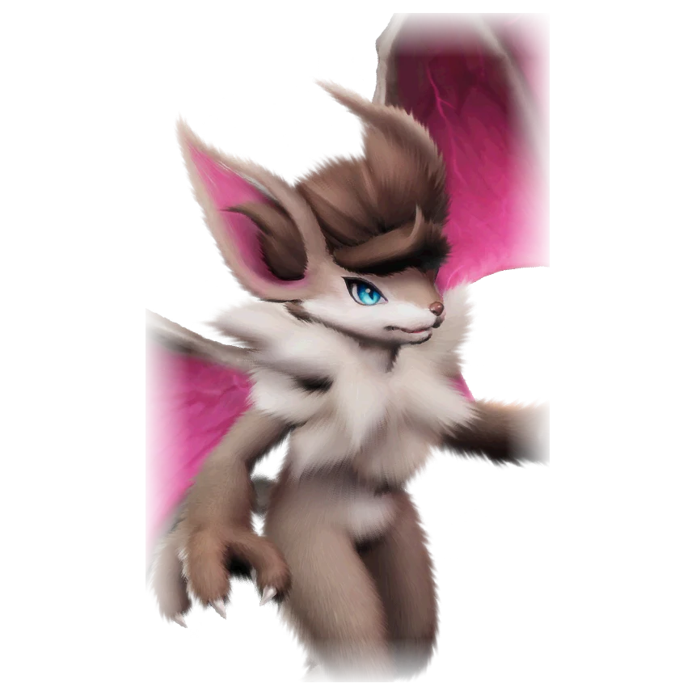

รายชื่อ Aniimo › #032

ค้างคาวนักสืบ (Eklue)
#032ธาตุลมNovaSupportTier A
ขี้สงสัยและกระตือรือร้นในการตามรอยเป้าหมาย วงแหวนที่หางขยายคลื่นอัลตราซาวด์ ทำให้ตรวจจับสิ่งมีชีวิตที่พรางตัวได้ง่าย
ดูรายละเอียดเต็ม ร่างพิเศษ และร่างเปล่งประกายค่าสถานะพื้นฐาน
| HP | 100 |
|---|---|
| ATK | 120 |
| P.DEF | 83 |
| M.DEF | 67 |
| REGEN | 91 |
| BREAK | 49 |
สกิล
| โจมตีปกติ | ATK ลม ใช้พลังลมโจมตีเป้าหมายระยะประชิด |
| สกิล 1 | Arc Strike ลม กวาดโจมตีเป็นรูปโค้ง ศัตรูที่โดนขณะติด [Weakness Mark] จะติด [stunned] 2.5 วินาทีด้วย |
| สกิล 2 | Detect Weakness ลม ใช้เครื่องขยายเสียงที่หางส่งโซนาร์ต่อเนื่อง ตรวจหาจุดอ่อนของเป้าหมายในระยะ เล็งจุดอ่อนไว้ตรงกลาง 0.8 วินาทีเพื่อติด Weakness Mark ลดการต้านคริติคอล 12% (+1.1% ต่อ ATK 100 สูงสุด 21%) เป็นเวลา 20 วินาที |
| สกิล 3 | Tactical Kick ลม พุ่งเข้าหาเป้าหมายอย่างรวดเร็ว ตีลังกาเตะทำดาเมจ แล้วกระโดดกลับจุดเดิม ลดความเร็วเคลื่อนที่ของเป้าหมาย 30% เป็นเวลา 10 วินาที |
| อัลติเมต | Target Weakness ลม ติด Weakness Mark ให้เป้าหมายทุกตัวในระยะมองเห็น 30 วินาที และลดการต้านทานลมของเป้าหมาย 20% (+1.9% ต่อ ATK 100 สูงสุด 35%) เป็นเวลา 30 วินาที |
สายวิวัฒนาการ
- ค้างคาวจิ๋ว → ค้างคาวนักสืบ (Aniimo เลเวล 25, ได้ศักยภาพ ATK ตั้งแต่ 6 ขึ้นไป)
จุดเกิด
- Forest of Falling Stars Lv. 20–25
Held Item ที่แนะนำ
- Spirited Feather Aniimo ที่สวมใส่ได้ REGEN เพิ่ม 0.7 ต่อเลเวล
- Auspicious Bell เมื่อใช้สกิล มีโอกาส 20% ได้รับ 5 EP
งานใน Homeland
งานธาตุลม Lv.3, งานช่าง Lv.3